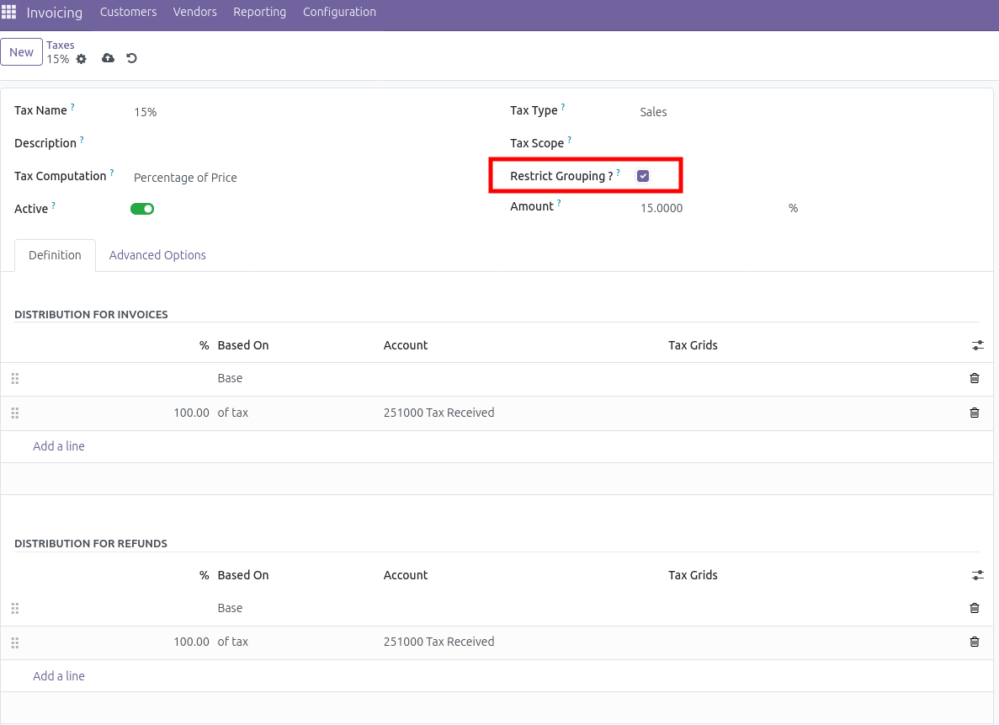
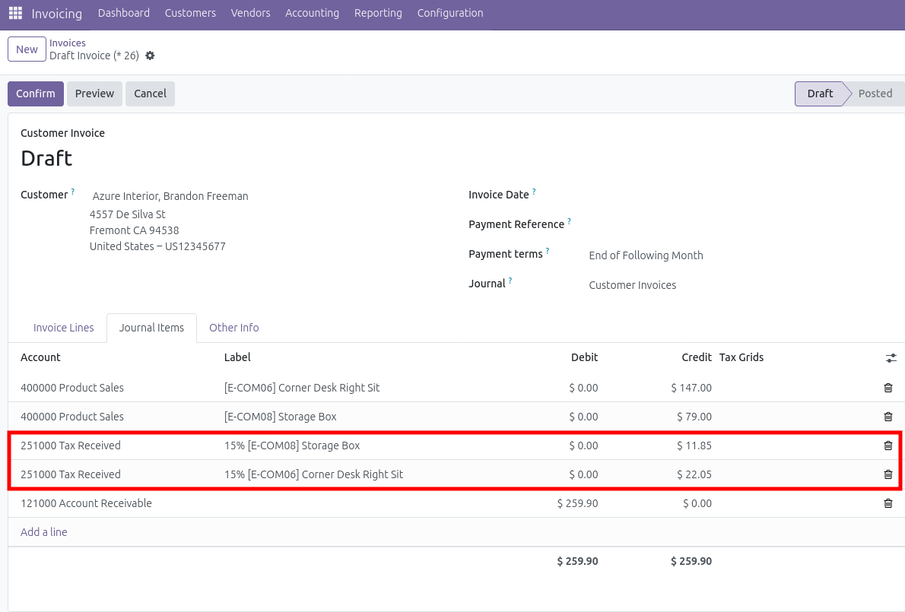
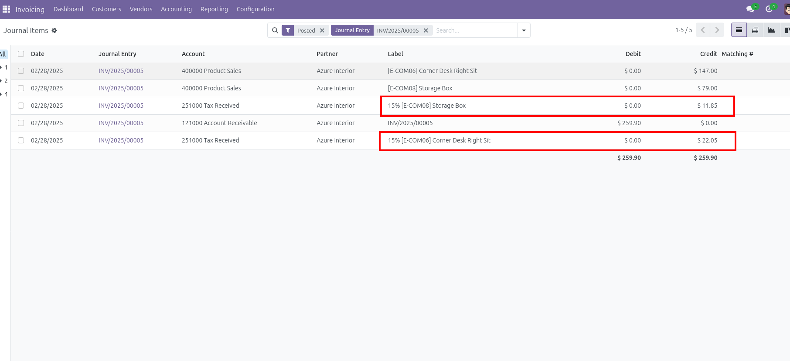

Enhance your Odoo invoicing experience with this custom module designed to provide detailed and separate tax lines for each product in journal items. This module is particularly useful for businesses that require a clear breakdown of taxes applied to individual products within their invoices.
By default, Odoo groups all taxes into a single line in the journal items.
With this module, you have option to restrict tax grouping under the applicable taxes, as shown in the image below.:

Once enabled, the journal items will display separate tax lines for each product, providing a clear and detailed breakdown:


To install this module, simply download it from the Odoo App Store and follow the standard installation procedure. Ensure that you are using Odoo version 16 (Community and Enterprise) for compatibility.
If you encounter any issues or have any questions / Need support in Odoo customisation other than this, please feel free to contact below email.
lambdadigitech@gmail.com